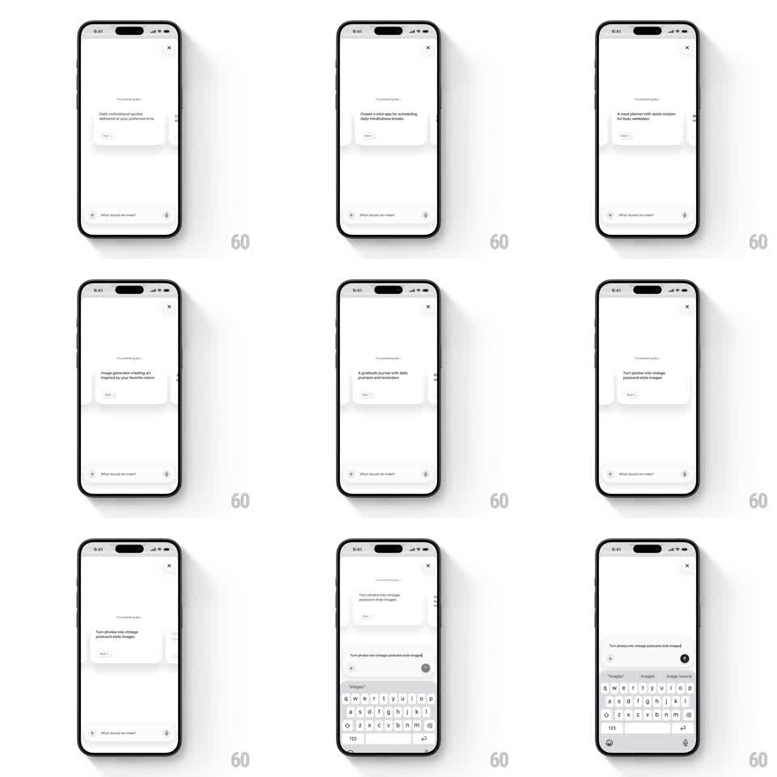

Media
Frame-by-frame

Rebuild this interaction 1:1: Wabi's chat suggestions - a swipeable carousel of suggestion cards ("Daily motivational quotes", "Morning meetings briefing", "A gratitude journal") where tapping a card's action button morphs the card's text into the chat input field and raises the keyboard.

Rebuild this interaction 1:1: Wabi's chat suggestions - a swipeable carousel of suggestion cards ("Daily motivational quotes", "Morning meetings briefing", "A gratitude journal") where tapping a card's action button morphs the card's text into the chat input field and raises the keyboard.
## Integration
Integration: stack-agnostic spec - springs given as stiffness/damping, timed motions as duration + curve; map every value to your framework and animation library of choice.
## Scene
White chat screen: close X top-right, "Try something like..." label, a carousel of white suggestion cards (title, two-line description, "Tap it" button) with the next card peeking, and the chat input pinned at bottom: "What should we make?" placeholder, + button, mic. Final frame: keyboard up with the suggestion text sitting in the input and a send arrow.
## Motion spec
Pattern: card-to-input text flight, ~450ms.
- Swipe: cards track the drag 1:1 with a slight stack tilt (+-3deg); release snaps to the nearest card (spring ~340/24).
- Tap: the card scales up slightly (1 -> 1.03, 150ms), then its title text lifts out and flies to the input field (400ms, ease-in-out, shrinking from card scale to input scale); the card collapses away (250ms).
- Land: the text settles into the input (character cascade optional, 120ms), the keyboard rises (250ms), and the send arrow fills.
- Refill: the next suggestion card slides into the freed slot (300ms, ease-out).
## Calibration
- The flying text is the card's actual title - same string, continuous geometry.
- The input stays pinned; the keyboard appears only after the text lands.
## Reduced motion
Card fades out; text appears in the input (200ms).
## Don't miss
- The carousel and the morph both work - swiping never triggers the flight, tapping the button never swipes.
- "Try something like..." stays put while cards move under it.